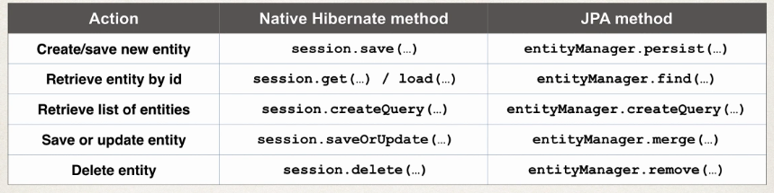

Spring Boot
Spring Boot is a framework that:
- Make it easier to get started with Spring development
- Minimize the amount of manual configuration
- Perform auto-configuration based on props files and JAR classpath
- Help to resolve dependency conflicts (Maven or Gradle)
- Provide an embedded HTTP server so you can get started quickly
To create a new project you just have to go to Spring Initiliazr, where you simply select your dependencies and lets you create a maven/gradle project and import it into an IDE.
So now our app is a jar file, and it includes the source code and also the embedded http server, so can be ran from the command line, from your IDE, etc. However if you want to export your code as a war file, you can also do that by exporting only your source code, without the embedded server.
With the jar file you can run your application by executing:
$ java -jar app.jarRest Controller
Create Controller
The controller is the same as in Spring REST:
package com.springboot.demo.mycoolapp.rest;
import java.time.LocalDateTime;
import org.springframework.beans.factory.annotation.Value;
import org.springframework.web.bind.annotation.GetMapping;
import org.springframework.web.bind.annotation.RestController;
@RestController
public class FunRestController {
// expose "/" that return "Hello World"
@GetMapping("/")
public String sayHello() {
return "Hello World! Time on server is " + LocalDateTime.now();
}Main App
The SpringBootApplication is made up of three annotations:
- Auto configuration (
@EnableAutoConfiguration) - Component scanning (
@ComponentScan) - Additional configuration (
@Configuration)
package com.springboot.demo.mycoolapp;
import org.springframework.boot.SpringApplication;
import org.springframework.boot.autoconfigure.SpringBootApplication;
// Annotation to tell Spring this is an spring application
@SpringBootApplication
public class MycoolappApplication {
public static void main(String[] args) {
// Boostrap spring boot application
SpringApplication.run(MycoolappApplication.class, args);
}
}Spring Boot Project Structure
Application Properties
By default, Spring Boot will load properties from: application.properties in the src project directory. We inject it in our code the same way we did it with Spring
Static Content
By default, Spring Boot wil load static resources from "/static" directory
Testing
Unit tests are stored on the src directory under the /test folder
Spring Boot Starters
Spring Boot Starter Parent
This is a special starter that provides defaults:
- Default compiler level
- UTF-8 source encoding
You include it in your pom.xml file as follows:
...
<parent>
<groupId>org.springframework.boot</groupId>
<artifactId>spring-boot-starter-parent</artifactId>
<version>2.1.2.RELEASE</version>
<relativePath/> <!-- lookup parent from repository -->
</parent>
<dependencies>
...
</dependencies>
...If you want to override a default, you use properties:
...
<parent>
<groupId>org.springframework.boot</groupId>
<artifactId>spring-boot-starter-parent</artifactId>
<version>2.1.2.RELEASE</version>
<relativePath/> <!-- lookup parent from repository -->
</parent>
<!-- Override default java version -->
<properties>
<java.version>1.8</java.version>
</properties>
<dependencies>
...
</dependencies>
...Spring Boot DevTools
Spring Boot Dev Tools automatically restart your application when code is updated. The only thing you need to do is add the module to the dependencies:
...
<dependencies>
<!-- ADD SUPPORT FOR AUTOMATIC RELOADING -->
<dependency>
<groupId>org.springframework.boot</groupId>
<artifactId>spring-boot-devtools</artifactId>
</dependency>
</dependencies>
...Spring Boot Actuator
Add security
First you need to add Spring Security as a dependency in your pom.xml:
...
<dependencies>
...
<!-- SECURITY -->
<dependency>
<groupId>org.springframework.boot</groupId>
<artifactId>spring-boot-starter-security</artifactId>
</dependency>
...
</dependencies>
...Now, when we access some endpoints like /actuator/beans Spring will prompt a login to grant access to the endpoint.
- The default user name is “user”
- The password will be printed on the console where you start the application
To override these defaults edit the application.properties file as follows:
spring.security.user.name=alba
spring.security.user.password=mypasswordWe can also exclude endpoints by adding the following declarations to the application.properties file:
management.endpoints.web.exposure.exclude=health,infoApplication Properties
Configuring the Spring Boot Server
Some properties offered by Spring are:
Core
## Log levels severity mapping
logging.level.org.springframework=DEBUG
logging.level.org.hibernate=TRACE
logging.level.org.luv2code=INFO
## Log file name
logging.file=date.logWeb
## HTTP Server port
server.port=7070
## Context path of the application
server.servlet.context-path=/my-app
## Default HTTP Session timeout
server.servlet.session.timeout=15mActuator Properties
## Endpoints to include by name or wildcard
management.endpoints.web.exposure.include=*
## Endpoints to exclude by name or wildcard
management.endpoints.web.exposure.exclude=beans,mappingSecurity
## Default username
spring.security.user.name=admin
## Password for default user
spring.security.user.password=mypassData Properties
## JDBC URL of the database
spring.datasource.url=jdbc:mysql://localhost:3306/myapp
## Login username of the database
spring.datasource.username=alba
## Login password of the database
spring.datasource.password=testpassJPA
Until now, to manage data we have been using the EntityManager along with the Hibernate API. However now we are going to use the Standard JPA API.
The JPA API methods are similar to Native Hibernate API. It also supports a query language JPQL (JPA Query Language)
Comparing Hibernate to JPA:

Example: for managing employees with JPA, we first create the Data Access Object:
package com.springboot.cruddemo.dao;
import java.util.List;
import javax.persistence.EntityManager;
import javax.persistence.Query;
import org.springframework.beans.factory.annotation.Autowired;
import org.springframework.stereotype.Repository;
import com.luv2code.springboot.cruddemo.entity.Employee;
@Repository
public class EmployeeDAOJpaImpl implements EmployeeDAO {
private EntityManager entityManager;
@Autowired
public EmployeeDAOJpaImpl(EntityManager theEntityManager) {
entityManager = theEntityManager;
}
@Override
public List<Employee> findAll() {
// create a query
Query theQuery =
entityManager.createQuery("from Employee");
// execute query and get result list
List<Employee> employees = theQuery.getResultList();
// return the results
return employees;
}
@Override
public Employee findById(int theId) {
// get employee
Employee theEmployee =
entityManager.find(Employee.class, theId);
// return employee
return theEmployee;
}
@Override
public void save(Employee theEmployee) {
// save or update the employee
Employee dbEmployee = entityManager.merge(theEmployee);
// update with id from db ... so we can get generated id for save/insert
theEmployee.setId(dbEmployee.getId());
}
@Override
public void deleteById(int theId) {
// delete object with primary key
Query theQuery = entityManager.createQuery(
"delete from Employee where id=:employeeId");
theQuery.setParameter("employeeId", theId);
theQuery.executeUpdate();
}
}And then we call it from the Employee Service:
package com.springboot.cruddemo.service;
import java.util.List;
import org.springframework.beans.factory.annotation.Autowired;
import org.springframework.beans.factory.annotation.Qualifier;
import org.springframework.stereotype.Service;
import org.springframework.transaction.annotation.Transactional;
import com.springboot.cruddemo.dao.EmployeeDAO;
import com.springboot.cruddemo.entity.Employee;
@Service
public class EmployeeServiceImpl implements EmployeeService {
private EmployeeDAO employeeDAO;
@Autowired
public EmployeeServiceImpl(@Qualifier("employeeDAOJpaImpl") EmployeeDAO theEmployeeDAO) {
employeeDAO = theEmployeeDAO;
}
@Override
@Transactional
public List<Employee> findAll() {
return employeeDAO.findAll();
}
@Override
@Transactional
public Employee findById(int theId) {
return employeeDAO.findById(theId);
}
@Override
@Transactional
public void save(Employee theEmployee) {
employeeDAO.save(theEmployee);
}
@Override
@Transactional
public void deleteById(int theId) {
employeeDAO.deleteById(theId);
}
}This class implements the following interface:
package com.springboot.cruddemo.service;
import java.util.List;
import com.springboot.cruddemo.entity.Employee;
public interface EmployeeService {
public List<Employee> findAll();
public Employee findById(int theId);
public void save(Employee theEmployee);
public void deleteById(int theId);
}Spring Data JPA
Create Repository
So now the Employee DAO is as follows:
package com.springboot.cruddemo.dao;
import org.springframework.data.jpa.repository.JpaRepository;
import com.springboot.cruddemo.entity.Employee;
public interface EmployeeRepository extends JpaRepository<Employee, Integer> {
}Use Repository
And the Employee Service is:
package com.springboot.cruddemo.service;
import java.util.List;
import java.util.Optional;
import org.springframework.beans.factory.annotation.Autowired;
import org.springframework.stereotype.Service;
import com.springboot.cruddemo.dao.EmployeeRepository;
import com.springboot.cruddemo.entity.Employee;
@Service
public class EmployeeServiceImpl implements EmployeeService {
// Here we make use of the above implemented repository
private EmployeeRepository employeeRepository;
@Autowired
public EmployeeServiceImpl(EmployeeRepository theEmployeeRepository) {
employeeRepository = theEmployeeRepository;
}
@Override
public List<Employee> findAll() {
return employeeRepository.findAll();
}
@Override
public Employee findById(int theId) {
Optional<Employee> result = employeeRepository.findById(theId);
Employee theEmployee = null;
if (result.isPresent()) {
theEmployee = result.get();
}
else {
// we didn't find the employee
throw new RuntimeException("Did not find employee id - " + theId);
}
return theEmployee;
}
@Override
public void save(Employee theEmployee) {
employeeRepository.save(theEmployee);
}
@Override
public void deleteById(int theId) {
employeeRepository.deleteById(theId);
}
}This EmployeeService implements the interface:
package com.springboot.cruddemo.service;
import java.util.List;
import com.springboot.cruddemo.entity.Employee;
public interface EmployeeService {
public List<Employee> findAll();
public Employee findById(int theId);
public void save(Employee theEmployee);
public void deleteById(int theId);
}Spring Data Rest
Configuration
- You can specify the name of the endpoint that is exposed (by the default is the plural of the entity) with:
@RepositoryRestResource(path="members")
public interface EmployeeRepository extends JpaRepository<Employee, Integer> {
}- The default number of elements returned are 20, then we can use pagination to retrieve the next ones with query parameters (
?page=0). - Some properties available to tweak in
application.propertiesare:spring.data.rest.base-path: Base path used to expose repository resourcesspring.data.rest.default-page-size: Default size pagesspring.data.rest.max-page-size: Maximum size of pages
Sorting
You can sort by the property names of your entity. On the Employee example we have firstName, lastName and email, therefore we can do:
http://localhost:8080/employees?sort=firstName
or
http://localhost:8080/employees?sort=firstName,desc